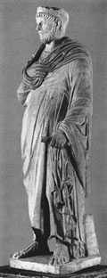

главная  персоналии
персоналии  Юлиан Отступник
Юлиан Отступник
главная |

Личность в историикраткая энциклопедияПроект «Личность в истории» посвящен людям — современникам грандиозных исторических событий, носителям редких качеств или людям, взгляды которых опередили их время. |
|||||||||||||||||||||||||||||||||||||||||||||||||||||||||||||
Коротко |
Статьи |
Персоналии |
Литература |
||||||||||||||||||||||||||||||||||||||||||||||||||||||||||
Юлиан Отступник |
|||||||||||||||||||||||||||||||||||||||||||||||||||||||||||||
|
«То был человек, бесспорно достойный быть причисленным к героям, выделявшийся славой своих дел и прирожденной величественностью. По определению философов есть четыре главные добродетели: умеренность, мудрость, справедливость и мужество, к которым присоединяются другие, внешние, а именно: знание военного дела, властность, счастье и благородство. Все их вместе и каждую в отдельности Юлиан воспитывал в себе самым ревностным образом». Аммиан Марцеллин, |
 | ||||||||||||||||||||||||||||||||||||||||||||||||||||||||||||
Биографическая справкаЮлиан Отступник, (Флавий Клавдий Юлиан Отступник, Flavius Claudius Julianus Apostata) (331–363 гг. н. э.), римский император с 361 года. Племянник Константина Великого. Получил христианское образование, но уже в юные годы занимался языческой литературой и философией. Под влиянием антиохийского ритора Либания и неоплатоника Максима обратился к язычеству. Талантливый полководец. Успешно воевал против франков и алеманнов (победа при Аргенторате в 357 г.). Став императором, провозгласил себя сторонником языческой религии, реформировав ее на базе неоплатонизма. ??здал эдикты против христиан, восстановил языческие храмы. Проводил реформы финансовой и налоговой систем. Усовершенствовал армию и почту. Погиб в 363 году во время парфянского похода. От христианской церкви получил прозвище Отступник. Хронология
Цитаты«Если бы он сделал всех людей более богатыми, чем Мидас, а все города более великими, чем Вавилон, и покрыл бы их стены золотом, но при этом не исправил бы человеческих заблуждений в отношении богов, то уподобился бы врачу, который, пользуя, совершенно больное тело, излечил бы все его члены за исключением глаз. ?? потому, он занялся в первую очередь излечением душ, открывая им знание об истинных небесных владыках». (Либаний) «Любовь к нему, увеличившаяся под влиянием того, чему солдаты сами были свидетелями, побуждала их охотно следовать за тем, в ком они видели товарища по всем своим трудам и авторитетнейшего полководца, взваливавшего, как все воочию убедились, больше обязанностей на самого себя, чем на солдата». (Аммиан Марцеллин) «Я знаю на опыте, что всякое горе сокрушает малодушных, оказываясь бессильным перед человеком твердого духа». (Юлиан Отступник) «В свободных науках он был весьма образован и греческий знал настолько, что его знание латыни не шло ни в какое сравнение со знанием греческого; обладал огромным природным даром красноречия, имел весьма цепкую память и в некоторых [вещах] разбирался почти как философ». (Евтропий) «К провинциалам он был весьма справедлив и не превышал налоги, насколько это было возможно. Со всеми он был учтив, <…> жаден к славе и в стремлении к ней неумерен; он был чрезвычайным преследователем христианской религии, однако в такой степени, что удерживался от кровопролития; и вполне был схож с Марком Антонином, которому даже старался подражать». (Евтропий) Список литературы
|
|||||||||||||||||||||||||||||||||||||||||||||||||||||||||||||
|